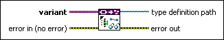
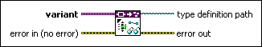

Get Type Definition Path VI
Owning Palette: Data Type Parsing VIs
Requires: Base Development System
Returns the path to the type definition of the data type stored in variant.

 Add to the block diagram Add to the block diagram |
 Find on the palette Find on the palette |
Owning Palette: Data Type Parsing VIs
Requires: Base Development System
Returns the path to the type definition of the data type stored in variant.

| Add to the block diagram |
Find on the palette |
 |
variant specifies the variant data from which you want to retrieve data type information. |
 |
error in describes error conditions that occur before this node runs. This input provides standard error in functionality. |
 |
type definition path returns the path to the type definition of the data type stored in variant when the data type is an instance of a type definition. Otherwise, LabVIEW returns an empty path. |
 |
error out contains error information. This output provides standard error out functionality. |